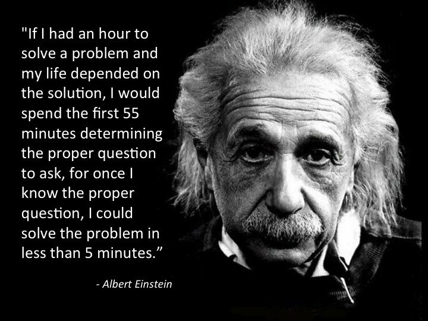

Have you ever been in a class where the instructor says “There is no stupid question.” That is a lie, we’ve all seen that one student who asked a stupid question, and the instructor just sighs. Communication is key when it comes to asking questions so that the person receiving the question can understand and answer it. Specifically, with software engineering, software engineers always come across a problem that they can’t find the answer to. Communication is key when communicating a problem with the lead engineer, finding answers on forums, or even communicating with google. Asking the wrong question will evidently lead to an unsatisfactory answer where the problem isn’t even answered.
Prior to asking a question, prepare for the type of question that you want to ask. Broad questions will make you seem arrogant, showing your lack of effort in trying to find the answer yourself. Keep in mind, people probably will not respond to you if you ask them a question that is very broad and easy to find on google. To avoid this, be specific on what you are working towards so that the problem asker and receiver are on the same page. Assure the reader that you know what you are talking about. Being specific can also narrow down the solution that you are looking for. The reader of the question should be able to abstract the question so that they know exactly what is being asked. Furthermore, when asking a question, try to answer the question first, be specific, show what you’ve done, and make your question readable. Tell a story about your thought process and the problem.
When you start to understand the difference between intelligent and stupid questions the more you are likely to find an answer. Relating to software engineering, when reading a smart question you will be able to abstract the question and understand other engineers thought processes and vice versa. Skipping the middle stage of not knowing how to ask a question will increase efficiency and productivity, as you will be able to find answers quickly and comprehend the questions faster. Thus, it is essential for software engineers to understand how to ask and read smart questions.
Here is a great answer to a smart question. In that forum post on StackOverflow, the user was very precise in what he was asking. The user had the main question as the title, then when you clicked further the user went on and went through the thought process of how they could solve the problem. The user provided more information on the problem, such as the commands they used, the reasoning behind them, and the outputs of the commands. With this, other users were able to respond to the question where the user received 13 answers, 1720 upvotes, and 2.1 million views.
Here is an example of a poorly written, stupid question. On this forum post, the user has many problems with the question and post. To begin, there are two different spellings of the software that he is referencing on the post. The question itself is okay it is straight to the point, however, the question can be improved and the content given after is not good. There are grammatical errors with the post, the user doesn’t provide any background on what they have tried to solve the answer. This gives the impression that the user has a lack of knowledge of the components of the question and a lack of willingness to find the answer. Therefore, the user was only able to receive two answers, zero upvotes, and 4,000 views.